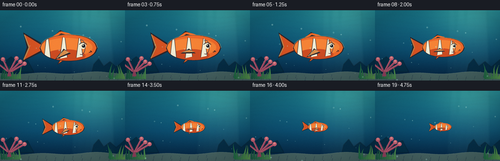
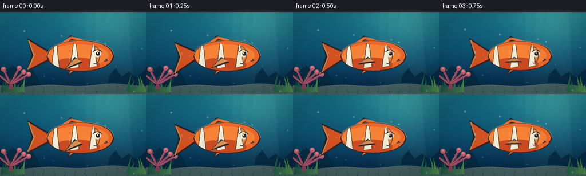

CODING AGENTS AS PIXEL WORLD MODELS
traex/DeepSeek-V4.1-Flash · instance_preservation_0051
点击播放 · 原生 RGB 像素
逐轮保存的候选
回放视频、检查图与代码变化。
每份候选均可单独播放。实际图片检查记录在下方工具轨迹中。
候选 01播放与检查图
点击播放 · 原生 RGB 像素


展开代码变化
--- 上一保存版本
+++ 本次保存版本
@@ -0,0 +1,442 @@
+from __future__ import annotations
+
+import math
+from pathlib import Path
+
+import numpy as np
+from PIL import Image, ImageDraw, ImageFilter
+
+from artifact_io import save
+
+
+WIDTH = 256
+HEIGHT = 144
+FRAMES = 20
+FPS = 4
+SS = 4
+SCALE_W = WIDTH * SS
+SCALE_H = HEIGHT * SS
+
+
+def mix(a: tuple[int, int, int], b: tuple[int, int, int], t: float) -> tuple[int, int, int]:
+ return tuple(round(x + (y - x) * t) for x, y in zip(a, b))
+
+
+def rgba(color: tuple[int, int, int], alpha: int) -> tuple[int, int, int, int]:
+ return (*color, alpha)
+
+
+def background(time: float) -> Image.Image:
+ image = Image.new("RGB", (SCALE_W, SCALE_H))
+ pixels = np.empty((SCALE_H, SCALE_W, 3), dtype=np.float32)
+
+ top = np.array([24, 119, 139], dtype=np.float32)
+ middle = np.array([12, 77, 111], dtype=np.float32)
+ bottom = np.array([5, 33, 62], dtype=np.float32)
+ ys = np.linspace(0.0, 1.0, SCALE_H, dtype=np.float32)[:, None, None]
+ upper_t = np.clip(ys / 0.57, 0.0, 1.0)
+ lower_t = np.clip((ys - 0.57) / 0.43, 0.0, 1.0)
+ pixels[:] = top * (1.0 - upper_t) + middle * upper_t
+ pixels = np.where(ys < 0.57, pixels, middle * (1.0 - lower_t) + bottom * lower_t)
+
+ # Soft sunlight entering from the upper right.
+ yy, xx = np.mgrid[0:SCALE_H, 0:SCALE_W].astype(np.float32)
+ glow = np.exp(-(((xx - SCALE_W * 0.77) / (SCALE_W * 0.29)) ** 2 +
+ ((yy - SCALE_H * -0.02) / (SCALE_H * 0.48)) ** 2))
+ pixels += glow[:, :, None] * np.array([31.0, 48.0, 31.0], dtype=np.float32)
+ image = Image.fromarray(np.clip(pixels, 0, 255).astype(np.uint8), "RGB").convert("RGBA")
+
+ light = Image.new("RGBA", image.size, (0, 0, 0, 0))
+ draw = ImageDraw.Draw(light, "RGBA")
+ for i in range(5):
+ shift = (time * 7 + i * 23) % 70
+ x = int(SCALE_W * (0.60 + i * 0.055))
+ width = int(SCALE_W * (0.025 + i * 0.004))
+ draw.polygon(
+ [
+ (x - width + shift, 0),
+ (x + width + shift, 0),
+ (x + width * 2.5, int(SCALE_H * 0.95)),
+ (x - width * 1.1, int(SCALE_H * 0.95)),
+ ],
+ fill=(147, 224, 216, 8 + i * 2),
+ )
+ light = light.filter(ImageFilter.GaussianBlur(9 * SS / 4))
+ image = Image.alpha_composite(image, light)
+
+ # Distant reef silhouettes provide stable scale cues without crowding the fish.
+ distant = Image.new("RGBA", image.size, (0, 0, 0, 0))
+ d = ImageDraw.Draw(distant, "RGBA")
+ d.polygon(
+ [(0, SCALE_H * 0.88), (0, SCALE_H * 0.68), (SCALE_W * 0.04, SCALE_H * 0.73),
+ (SCALE_W * 0.09, SCALE_H * 0.66), (SCALE_W * 0.15, SCALE_H * 0.76),
+ (SCALE_W * 0.22, SCALE_H * 0.71), (SCALE_W * 0.27, SCALE_H * 0.88)],
+ fill=(5, 46, 68, 210),
+ )
+ d.polygon(
+ [(SCALE_W * 0.72, SCALE_H), (SCALE_W * 0.75, SCALE_H * 0.77),
+ (SCALE_W * 0.79, SCALE_H * 0.69), (SCALE_W * 0.83, SCALE_H * 0.80),
+ (SCALE_W * 0.88, SCALE_H * 0.73), (SCALE_W * 0.93, SCALE_H * 0.81),
+ (SCALE_W, SCALE_H * 0.70), (SCALE_W, SCALE_H)],
+ fill=(4, 43, 67, 220),
+ )
+ image = Image.alpha_composite(image, distant.filter(ImageFilter.GaussianBlur(1.5 * SS / 2)))
+
+ # Animated caustic ribbons.
+ caustic = Image.new("RGBA", image.size, (0, 0, 0, 0))
+ c = ImageDraw.Draw(caustic, "RGBA")
+ for band in range(8):
+ pts = []
+ base_y = SCALE_H * (0.08 + band * 0.075)
+ for px in range(-20, SCALE_W + 30, 10):
+ py = base_y + math.sin(px / (31 * SS) + band * 0.85 + time * 1.8) * 4.5 * SS
+ py += math.sin(px / (67 * SS) - band + time * 0.8) * 2.0 * SS
+ pts.append((px, py))
+ c.line(pts, fill=(128, 226, 217, 18 if band < 5 else 11), width=SS)
+ caustic = caustic.filter(ImageFilter.GaussianBlur(1.2 * SS))
+ image = Image.alpha_composite(image, caustic)
+
+ return image
+
+
+def draw_seagrass(layer: Image.Image, time: float) -> None:
+ draw = ImageDraw.Draw(layer, "RGBA")
+ base_y = SCALE_H * 0.98
+
+ def blade(x: float, height: float, width: float, lean: float, phase: float,
+ color: tuple[int, int, int], alpha: int) -> None:
+ pts = []
+ for i in range(13):
+ t = i / 12
+ px = x + math.sin(time * 1.2 + phase + t * 2.2) * lean * t * t
+ py = base_y - height * t
+ pts.append((px, py))
+ left = [(x - width * (1 - t) + math.sin(time * 1.2 + phase + (t := i / 12) * 2.2) * lean * t * t,
+ base_y - height * t) for i in range(13)]
+ right = [(x + width * (1 - t) + math.sin(time * 1.2 + phase + (t := i / 12) * 2.2) * lean * t * t,
+ base_y - height * t) for i in range(12, -1, -1)]
+ draw.polygon(left + right, fill=rgba(color, alpha))
+
+ for i in range(9):
+ x = SCALE_W * (0.015 + i * 0.018)
+ blade(x, SCALE_H * (0.15 + 0.07 * math.sin(i * 1.7)),
+ 2.5 * SS, 4.5 * SS, i * 0.8,
+ mix((26, 92, 69), (88, 158, 84), i / 10), 165)
+ for i in range(7):
+ x = SCALE_W * (0.88 + i * 0.019)
+ blade(x, SCALE_H * (0.14 + 0.08 * math.cos(i * 1.4)),
+ 3.0 * SS, -5.0 * SS, 2.4 + i * 0.7,
+ mix((35, 110, 72), (113, 166, 80), i / 9), 175)
+
+
+def draw_coral(layer: Image.Image) -> None:
+ draw = ImageDraw.Draw(layer, "RGBA")
+ base_x = SCALE_W * 0.075
+ base_y = SCALE_H * 0.94
+ trunk = (157, 70, 101, 235)
+ highlight = (211, 112, 126, 220)
+ draw.polygon(
+ [(base_x - 4 * SS, base_y), (base_x - 2.2 * SS, base_y - 12 * SS),
+ (base_x + 1.7 * SS, base_y - 12 * SS), (base_x + 4 * SS, base_y)],
+ fill=trunk,
+ )
+ branches = [
+ (-0.5, 25, -12), (0.25, 27, 14), (1.0, 20, 20),
+ (-1.2, 18, -23), (1.7, 16, 27),
+ ]
+ for angle, length, dx in branches:
+ sx = base_x + angle * 2.4 * SS
+ sy = base_y - 10 * SS
+ ex = sx + dx * SS
+ ey = sy - length * SS
+ draw.line([(sx, sy), (ex, ey)], fill=trunk, width=4 * SS)
+ draw.line([(sx - SS, sy), (ex - SS, ey)], fill=highlight, width=SS)
+ r = 4.3 * SS
+ draw.ellipse((ex - r, ey - r, ex + r, ey + r), fill=(202, 99, 117, 235))
+ draw.ellipse((ex - r * 0.5, ey - r * 0.75, ex + r * 0.45, ey + r * 0.1),
+ fill=(234, 143, 145, 150))
+
+
+def draw_floor(image: Image.Image) -> Image.Image:
+ floor = Image.new("RGBA", image.size, (0, 0, 0, 0))
+ draw = ImageDraw.Draw(floor, "RGBA")
+ top = SCALE_H * 0.895
+ pts = [(0, SCALE_H)]
+ for x in range(0, SCALE_W + 8, 8):
+ y = top + math.sin(x / (18 * SS)) * 1.8 * SS + math.sin(x / (41 * SS)) * 1.2 * SS
+ pts.append((x, y))
+ pts.append((SCALE_W, SCALE_H))
+ draw.polygon(pts, fill=(78, 107, 104, 235))
+ draw.line(pts[1:-1], fill=(164, 183, 152, 120), width=SS)
+ for i in range(80):
+ x = (i * 73 + 19) % SCALE_W
+ y = top + 4 * SS + (i * 37) % int(SCALE_H * 0.09)
+ r = (0.4 + (i % 3) * 0.28) * SS
+ color = (173, 180, 145, 85) if i % 3 else (40, 81, 91, 80)
+ draw.ellipse((x - r, y - r, x + r, y + r), fill=color)
+ return Image.alpha_composite(image, floor)
+
+
+def body_polygon(cx: float, cy: float, scale: float, phase: float) -> list[tuple[float, float]]:
+ length = 79.0 * scale * SS
+ height = 39.0 * scale * SS
+ top: list[tuple[float, float]] = []
+ bottom: list[tuple[float, float]] = []
+ count = 36
+ for i in range(count + 1):
+ t = i / count
+ x = -0.40 + t * 0.99
+ u = (x - 0.095) / 0.49
+ envelope = math.sqrt(max(0.0, 1.0 - u * u))
+ taper = 0.96 - 0.035 * math.sin(t * math.pi)
+ top.append((cx + x * length, cy - height * 0.5 * envelope * taper))
+ bottom.append((cx + x * length, cy + height * 0.5 * envelope * taper))
+ return top + bottom[::-1]
+
+
+def draw_fish(base: Image.Image, progress: float, time: float) -> Image.Image:
+ ease = progress * progress * (3.0 - 2.0 * progress)
+ scale = 1.52 * (1.0 - ease) + 0.46 * ease
+ cx = WIDTH * (0.505 + 0.025 * ease) * SS
+ cy = HEIGHT * (0.535 - 0.018 * ease) * SS
+ phase = time * math.tau * 0.72
+ length = 79.0 * scale * SS
+ height = 39.0 * scale * SS
+
+ fish = Image.new("RGBA", base.size, (0, 0, 0, 0))
+ draw = ImageDraw.Draw(fish, "RGBA")
+
+ outline = max(0.9 * SS, 1.45 * scale * SS)
+ orange = (238, 105, 42, 255)
+ deep_orange = (190, 57, 26, 255)
+ bright_orange = (255, 155, 63, 255)
+ ink = (47, 37, 42, 255)
+
+ # Tail fin, with a narrow waist and a rhythmic forked silhouette.
+ tail_wave = math.sin(phase) * 4.2 * scale * SS
+ tail_outer = [
+ (cx - 0.36 * length, cy - 0.15 * height),
+ (cx - 0.68 * length, cy - 0.53 * height + tail_wave),
+ (cx - 0.62 * length, cy - 0.03 * height + tail_wave * 0.35),
+ (cx - 0.69 * length, cy + 0.48 * height + tail_wave),
+ (cx - 0.36 * length, cy + 0.14 * height),
+ ]
+ draw.polygon(tail_outer, fill=ink)
+ inset = 1.7 * scale * SS
+ tail_inner = [
+ (cx - 0.38 * length, cy - 0.11 * height),
+ (cx - 0.66 * length, cy - 0.46 * height + tail_wave),
+ (cx - 0.58 * length, cy - 0.01 * height + tail_wave * 0.35),
+ (cx - 0.67 * length, cy + 0.41 * height + tail_wave),
+ (cx - 0.38 * length, cy + 0.10 * height),
+ ]
+ draw.polygon(tail_inner, fill=(224, 84, 32, 245))
+ draw.line([tail_inner[1], tail_inner[2], tail_inner[3]],
+ fill=(252, 160, 72, 190), width=max(1, round(1.4 * scale * SS)))
+
+ # Dorsal fin.
+ dorsal = [
+ (cx - 0.22 * length, cy - 0.29 * height),
+ (cx - 0.05 * length, cy - 0.61 * height),
+ (cx + 0.10 * length, cy - 0.47 * height),
+ (cx + 0.29 * length, cy - 0.31 * height),
+ ]
+ draw.polygon(dorsal, fill=ink)
+ draw.line([dorsal[0], (cx - 0.04 * length, cy - 0.54 * height), dorsal[2]],
+ fill=(246, 111, 42, 255), width=max(2, round(2.8 * scale * SS)))
+ draw.line([dorsal[2], (cx + 0.26 * length, cy - 0.34 * height)],
+ fill=(244, 123, 48, 245), width=max(2, round(2.2 * scale * SS)))
+
+ # Lower fins.
+ pelvic = [
+ (cx - 0.03 * length, cy + 0.31 * height),
+ (cx - 0.10 * length, cy + 0.58 * height),
+ (cx + 0.10 * length, cy + 0.34 * height),
+ ]
+ draw.polygon(pelvic, fill=ink)
+ draw.polygon(
+ [(pelvic[0][0] + inset, pelvic[0][1]),
+ (pelvic[1][0] + inset, pelvic[1][1] - inset),
+ (pelvic[2][0] - inset, pelvic[2][1])],
+ fill=(238, 104, 42, 255),
+ )
+
+ body = body_polygon(cx, cy, scale, phase)
+ draw.polygon(body, fill=ink)
+ inner_body = body_polygon(cx, cy, scale * 0.965, phase)
+ # Keep the inset centered rather than shifting the front and rear edges.
+ draw.polygon(inner_body, fill=orange)
+
+ # Orange body shading: warm back, darker belly, clipped to the body silhouette.
+ body_mask = Image.new("L", base.size, 0)
+ ImageDraw.Draw(body_mask).polygon(inner_body, fill=255)
+ shade = Image.new("RGBA", base.size, (0, 0, 0, 0))
+ sd = ImageDraw.Draw(shade, "RGBA")
+ sd.ellipse(
+ (cx - 0.38 * length, cy - 0.34 * height,
+ cx + 0.50 * length, cy + 0.31 * height),
+ fill=(255, 161, 68, 120),
+ )
+ sd.ellipse(
+ (cx - 0.30 * length, cy + 0.05 * height,
+ cx + 0.38 * length, cy + 0.49 * height),
+ fill=(171, 46, 26, 125),
+ )
+ fish = Image.composite(Image.alpha_composite(fish, shade), fish, body_mask)
+
+ # Three white clownfish bands with fine dark margins.
+ bands = Image.new("RGBA", base.size, (0, 0, 0, 0))
+ bd = ImageDraw.Draw(bands, "RGBA")
+ band_specs = [
+ (-0.28, 0.075, 0.85),
+ (0.00, 0.085, 0.75),
+ (0.27, 0.070, 0.69),
+ ]
+ for bx, bw, bh in band_specs:
+ x0 = cx + (bx - bw * 0.5) * length
+ x1 = cx + (bx + bw * 0.5) * length
+ y0 = cy - bh * 0.5 * height
+ y1 = cy + bh * 0.5 * height
+ bd.polygon(
+ [(x0 + 0.035 * length, y0), (x1 - 0.010 * length, y0 + 0.04 * height),
+ (x1 + 0.030 * length, y1 - 0.05 * height), (x0 - 0.012 * length, y1)],
+ fill=(243, 240, 217, 250),
+ )
+ bands.putalpha(Image.composite(bands.getchannel("A"), Image.new("L", base.size, 0), body_mask))
+ fish = Image.alpha_composite(fish, bands)
+
+ # Fine dark edging on the white bands.
+ band_edge = Image.new("RGBA", base.size, (0, 0, 0, 0))
+ ed = ImageDraw.Draw(band_edge, "RGBA")
+ for bx, bw, bh in band_specs:
+ x0 = cx + (bx - bw * 0.5) * length
+ x1 = cx + (bx + bw * 0.5) * length
+ y0 = cy - bh * 0.5 * height
+ y1 = cy + bh * 0.5 * height
+ ed.line([(x0 + 0.035 * length, y0), (x0 - 0.012 * length, y1)],
+ fill=(48, 39, 43, 180), width=max(1, round(0.9 * scale * SS)))
+ ed.line([(x1 - 0.010 * length, y0 + 0.04 * height), (x1 + 0.030 * length, y1 - 0.05 * height)],
+ fill=(48, 39, 43, 180), width=max(1, round(0.9 * scale * SS)))
+ band_edge.putalpha(Image.composite(band_edge.getchannel("A"), Image.new("L", base.size, 0), body_mask))
+ fish = Image.alpha_composite(fish, band_edge)
+
+ # Pectoral fin overlays the body and conveys a little swimming motion.
+ fin_flap = math.sin(phase + 1.4) * 0.10
+ pectoral = [
+ (cx + 0.01 * length, cy + 0.03 * height),
+ (cx - 0.14 * length, cy + (0.31 + fin_flap) * height),
+ (cx + 0.13 * length, cy + 0.20 * height),
+ ]
+ draw = ImageDraw.Draw(fish, "RGBA")
+ draw.polygon(pectoral, fill=(48, 39, 43, 230))
+ draw.polygon(
+ [(pectoral[0][0] + inset * 0.5, pectoral[0][1] + inset),
+ (pectoral[1][0] + inset, pectoral[1][1] - inset),
+ (pectoral[2][0] - inset, pectoral[2][1] - inset)],
+ fill=(255, 155, 70, 215),
+ )
+ if scale > 0.75:
+ draw.line(
+ [(cx - 0.01 * length, cy + 0.08 * height),
+ (cx - 0.10 * length, cy + (0.27 + fin_flap) * height)],
+ fill=(255, 205, 133, 140),
+ width=max(1, round(0.7 * scale * SS)),
+ )
+
+ # Face: eye, pupil, cheek highlight, mouth and gill crease.
+ eye_x = cx + 0.34 * length
+ eye_y = cy - 0.065 * height
+ eye_rx = max(1.5 * SS, 0.052 * length)
+ eye_ry = max(1.5 * SS, 0.105 * height)
+ draw.ellipse((eye_x - eye_rx, eye_y - eye_ry, eye_x + eye_rx, eye_y + eye_ry),
+ fill=(244, 235, 205, 255))
+ pupil_r = max(1.1 * SS, eye_rx * 0.54)
+ draw.ellipse((eye_x - pupil_r + 0.008 * length, eye_y - pupil_r,
+ eye_x + pupil_r + 0.008 * length, eye_y + pupil_r),
+ fill=(24, 31, 36, 255))
+ glint = max(0.6 * SS, pupil_r * 0.30)
+ draw.ellipse((eye_x - glint, eye_y - pupil_r * 0.65,
+ eye_x + glint, eye_y - pupil_r * 0.65 + 2 * glint),
+ fill=(255, 255, 242, 240))
+ draw.arc(
+ (eye_x - eye_rx * 1.45, eye_y - eye_ry * 1.18,
+ eye_x + eye_rx * 1.42, eye_y + eye_ry * 1.20),
+ 205, 338, fill=(62, 43, 38, 220), width=max(1, round(0.8 * scale * SS)),
+ )
+ draw.line(
+ [(cx + 0.46 * length, cy + 0.10 * height),
+ (cx + 0.49 * length, cy + 0.135 * height),
+ (cx + 0.44 * length, cy + 0.16 * height)],
+ fill=(76, 40, 33, 230), width=max(1, round(1.0 * scale * SS)),
+ )
+ draw.arc(
+ (cx + 0.24 * length, cy - 0.28 * height,
+ cx + 0.38 * length, cy + 0.24 * height),
+ 250, 110, fill=(153, 48, 29, 130), width=max(1, round(0.8 * scale * SS)),
+ )
+
+ # A restrained rim light keeps the fish separated from the blue water.
+ rim = Image.new("RGBA", base.size, (0, 0, 0, 0))
+ rd = ImageDraw.Draw(rim, "RGBA")
+ rd.line(body[:len(body) // 2 + 1], fill=(255, 214, 148, 95),
+ width=max(1, round(0.85 * scale * SS)))
+ fish = Image.alpha_composite(fish, rim)
+
+ return Image.alpha_composite(base, fish)
+
+
+def draw_particles(image: Image.Image, time: float) -> Image.Image:
+ layer = Image.new("RGBA", image.size, (0, 0, 0, 0))
+ draw = ImageDraw.Draw(layer, "RGBA")
+ for i in range(18):
+ speed = 2.4 + (i % 5) * 0.55
+ x = ((i * 47 + 29) % 251) * SS
+ y = (HEIGHT * SS - ((time * speed * SS + i * 31 * SS) % (HEIGHT * SS * 0.80)))
+ r = (0.55 + (i % 4) * 0.38) * SS
+ x += math.sin(time * 1.7 + i * 2.2) * 1.8 * SS
+ draw.ellipse((x - r, y - r, x + r, y + r), fill=(181, 235, 225, 60 + (i % 3) * 20))
+ if i % 4 == 0:
+ draw.ellipse((x - r * 0.42, y - r * 0.48, x + r * 0.05, y - r * 0.02),
+ fill=(235, 255, 247, 125))
+ return Image.alpha_composite(image, layer)
+
+
+def finalize(image: Image.Image, frame_index: int) -> np.ndarray:
+ image = image.convert("RGB").resize((WIDTH, HEIGHT), Image.Resampling.LANCZOS)
+ array = np.asarray(image, dtype=np.float32)
+ yy, xx = np.mgrid[0:HEIGHT, 0:WIDTH].astype(np.float32)
+ nx = (xx - WIDTH * 0.5) / (WIDTH * 0.5)
+ ny = (yy - HEIGHT * 0.5) / (HEIGHT * 0.5)
+ vignette = np.clip(1.0 - 0.13 * (nx * nx + ny * ny), 0.82, 1.0)
+ array *= vignette[:, :, None]
+ # A tiny fixed-pattern grain prevents flat digital gradients without masking detail.
+ rng = np.random.default_rng(4100 + frame_index)
+ grain = rng.normal(0.0, 0.65, (HEIGHT, WIDTH, 1)).astype(np.float32)
+ array += grain
+ return np.clip(array, 0, 255).astype(np.uint8)
+
+
+def generate() -> np.ndarray:
+ frames = []
+ for index in range(FRAMES):
+ progress = index / (FRAMES - 1)
+ time = index / FPS
+ image = background(time)
+ image = draw_floor(image)
+ draw_seagrass(image, time)
+ draw_coral(image)
+ image = draw_fish(image, progress, time)
+ image = draw_particles(image, time)
+ frames.append(finalize(image, index))
+ return np.stack(frames)
+
+
+def main() -> None:
+ case_dir = Path(__file__).resolve().parent
+ frames = generate()
+ save(frames, case_dir)
+ print(f"saved {len(frames)} frames to {case_dir}")
+
+
+if __name__ == "__main__":
+ main()
可观测工具轨迹
实际执行的命令与返回图片。
命令 1exit 0
/bin/bash -c "pwd && rg --files -g 'prompt.txt' -g 'GENERATION_RULES.md' -g 'task_spec.json' -g '"'!node_modules'"' -g '"'!venv'"'"
命令 2exit 0
/bin/bash -c 'ls -la'
命令 3exit 0
/bin/bash -c "find . -maxdepth 2 -type f -printf '%p\\n' | sort | head -200"
命令 4exit 0
/bin/bash -c 'cat prompt.txt'
命令 5exit 0
/bin/bash -c 'cat GENERATION_RULES.md'
命令 6exit 0
/bin/bash -c 'cat task_spec.json'
命令 7exit 0
/bin/bash -c "sed -n '1,240p' artifact_io.py && printf '\\n---PLAYER---\\n' && sed -n '1,260p' player_template.html"
命令 8exit 0
/bin/bash -c 'python generate.py'
命令 9exit 0
/bin/bash -c 'ls -lh inspection.png transition_check.png frames/00.png frames/19.png pixels.npz index.html'
命令 10exit 0
/bin/bash -c "python - <<'PY'
from PIL import Image
import numpy as np
for name in ['frames/00.png','frames/04.png','frames/09.png','frames/14.png','frames/19.png']:
a=np.asarray(Image.open(name))
print(name, a.shape, a.dtype, a.mean(axis=(0,1)).round(1), a.min(), a.max())
PY"命令 11exit 0
/bin/bash -c 'command -v chafa || command -v viu || command -v jp2 || command -v img2txt || true'
命令 12exit 0
/bin/bash -c "python - <<'PY'
from PIL import Image
import numpy as np
for f in [0,4,9,14,19]:
a=np.asarray(Image.open(f'frames/{f:02d}.png')).astype(int)
# saturated warm pixels identify the fish against blue water
m=(a[:,:,0]>120)&(a[:,:,0]>a[:,:,1]*1.25)&(a[:,:,1]>35)
ys,xs=np.where(m)
print(f, 'fish bbox', (xs.min(),ys.min(),xs.max(),ys.max()), 'count',len(xs))
PY"命令 13exit 0
/bin/bash -c "python - <<'PY'
from PIL import Image, ImageDraw
ims=[Image.open(f'frames/{i:02d}.png') for i in [0,4,9,14,19]]
canvas=Image.new('RGB',(256*5,144),(0,0,0))
for i,im in enumerate(ims): canvas.paste(im,(i*256,0))
canvas.resize((1280,720),Image.Resampling.NEAREST).save('.tmp/contact.png')
PY"命令 14exit 0
/bin/bash -c "python - <<'PY'
from PIL import Image
import numpy as np
im=Image.open('frames/00.png')
# 96x36 luminance block map focused on subject area for silhouette inspection
small=im.crop((50,35,220,120)).resize((85,21))
a=np.asarray(small).astype(float)
r,g,b=a[:,:,0],a[:,:,1],a[:,:,2]
for row in range(a.shape[0]):
line=''
for col in range(a.shape[1]):
rr,gg,bb=r[row,col],g[row,col],b[row,col]
if rr>150 and rr>gg*1.2: ch='@'
elif rr>110 and rr>gg*1.2: ch='O'
elif rr>180 and gg>150 and bb>100: ch='W'
elif rr+gg+bb<120: ch='#'
elif rr>gg*1.15: ch='o'
else: ch='.'
line+=ch
print(line)
PY"命令 15exit 0
/bin/bash -c "python - <<'PY'
from PIL import Image
import numpy as np
for f in [0,4,9,14,19]:
a=np.asarray(Image.open(f'frames/{f:02d}.png')).astype(int)
r,g,b=a[:,:,0],a[:,:,1],a[:,:,2]
# only the fish palette, excluding coral and background
warm=(r>175)&(r>g*1.25)&(g>35)&(b<125)
# keep connected-ish central region and report extents per x occupancy
ys,xs=np.where(warm & (np.indices(warm.shape)[1]>80) & (np.indices(warm.shape)[1]<240))
print(f, (xs.min(),ys.min(),xs.max(),ys.max()), len(xs))
PY"命令 16exit 0
/bin/bash -c "python - <<'PY'
from PIL import Image
import numpy as np
for f in [0,9,19]:
im=Image.open(f'frames/{f:02d}.png')
# nearest-neighbor 3x crop of central subject
im.crop((75,35,210,115)).resize((540,320),Image.Resampling.NEAREST).save(f'.tmp/fish{f:02d}.png')
PY"命令 17exit 0
/bin/bash -c "python - <<'PY'
from PIL import Image
import numpy as np
for f in [0,9,19]:
a=np.asarray(Image.open(f'frames/{f:02d}.png')).astype(float)
# crop around fish, print coarse brightness/mask shape
crop=a[38:112,75:215]
r,g,b=crop[:,:,0],crop[:,:,1],crop[:,:,2]
mask=(r>130)&(r>g*1.2)&(b<145)
# collapse 2x2 blocks
h,w=mask.shape; h-=h%2; w-=w%2
out=mask[:h,:w].reshape(h//2,2,w//2,2).mean((1,3))
print('\\nFRAME',f)
for row in out:
print(''.join('@' if v>.65 else '+' if v>.2 else '.' for v in row))
PY"命令 18exit 0
/bin/bash -c "python - <<'PY'
import json, re
from pathlib import Path
from PIL import Image
import numpy as np
p=Path('.')
spec=json.loads((p/'task_spec.json').read_text())
frames=sorted((p/'frames').glob('*.png'))
assert len(frames)==spec['frames'], len(frames)
for f in frames:
im=Image.open(f).convert('RGB')
assert im.size==(spec['width'],spec['height'])
arr=np.load(p/'pixels.npz')['pixels']
assert arr.shape==(spec['height'],spec['width'],spec['frames'])
html=(p/'index.html').read_text()
assert 'const DATA=' in html and len(html)>100000
print('validated', len(frames), 'frames', arr.shape, 'html_bytes', len(html))
PY"命令 19exit 0
/bin/bash -c 'git status --short 2>/dev/null || true'
保存候选 1 份；完成命令 19 次；可验证图片返回 0 张。原始 API 响应与完整日志保留在本地。